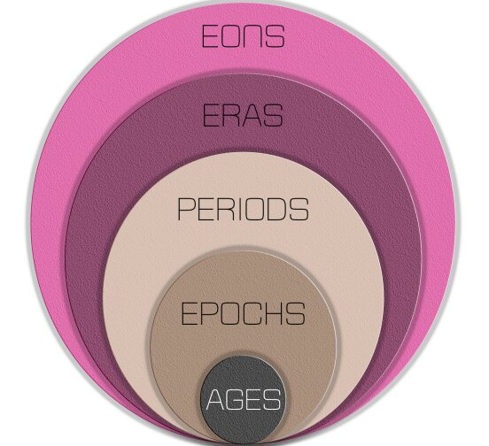

Meghalayan Age | 01 Jan 2022
Why in News?
- Geologists have decided to classify the past 4,200 years as the Meghalayan Age.
- It is the most recent unit of the Geologic Time Scale in the 4.6 billion-year history of the Earth.
- Following this, the International Chronostratigraphic Chart, which depicts the timeline for Earth's history will be updated.
What is Meghalayan Age?
- The “Meghalayan Age” began 4,200 years ago and experienced an abrupt mega- drought and cooling around the globe.
- The drought and the cooling lasted two centuries and severely impacted agricultural-based societies that developed in several regions after the end of the last Ice Age.
- It resulted in the collapse of civilisations in Egypt, Greece, Syria, Palestine, Mesopotamia, the Indus Valley, and the Yangtze River Valley.
- Evidence of the 4,200-year climatic event has been found on all seven continents.
- This age is considered unique as this was the only age which began with a global cultural event produced by a global climatic event.
- Geologists have also introduced two other age classifications:
- Greenlandian Age (11,700 - 8,326 years ago) - began when the last ice age ended and the world began to warm up.
- Northgrippian Age (8,326 – 4,200 years ago) – began after an abrupt global cooling started following the Greenlandian Age.
- Together, these three stages stretch across the Holocene Epoch, which is the current geological time unit - having started 11,700 years ago.
What is Holocene Epoch?
- The Holocene epoch falls under Cenozoic Era and is the time after Ice Age. Each subdivision of the Holocene Epoch is marked out by sediments accumulated on sea floors, lake bottoms, glacial ice and in stalactites and stalagmites across the world.
- Clues to the Greenlandian and Northgrippian stages were available at specific levels in Greenland’s ice cores (snow turns into ice, and preserves a record of the climate each year). But this method did not work as well for the younger (newer) part of the Holocene as it did for the older (early) part.
- Therefore, the younger (newer) part of the Holocene, i.e. Meghalayan Age division was marked out by a deviation in the types, or isotopes, of oxygen atoms present in the layers of stalagmite rocks of Mawmluh Cave in Meghalaya.
- Both the ice cores and the stalagmite are now defined as “international geostandards.”
- The stalagmite has also been tagged a Global Boundary Stratotype Section and Points (GSSP), the first formally ratified marker of a geological time period change in India.
- Scientists used the geological age dating method to study the rock’s age.
What is Geological Time Scale?
- Geologists divide the 4.6-billion-year existence of Earth into slices of time such as Eon, Era, System/Period, Series/Epoch, and Stage/Age.
- Eons are divided into Eras, Eras into Periods, Periods into Epochs, and Epochs into Ages.
- Each slice corresponds to significant happenings - such as the break-up of continents, dramatic shifts in climate, and even the emergence of particular types of animals and plant life.
International Commission on Stratigraphy (ICS)
- The International Commission on Stratigraphy (ICS) is the largest and oldest scientific body in the International Union of Geological Sciences (IUGS).
- It is the official keeper of geologic time, i.e. it precisely defines units (periods, epochs, and age) of the Geologic Time Scale.
Mawmluh Cave, Meghalaya
- Located at an elevation of 1,290 metres, Mawmluh cave is one of the longest and deepest caves in India.
- The caves provide important record of Holocene palaeoclimate and palaeomonsoon since they are not subjected to diagenesis, erosion and terrestrial deposits.
- The conditions here were suitable for preserving chemical signs of oxygen transition in ages.
Last Updated: 01/01/2022